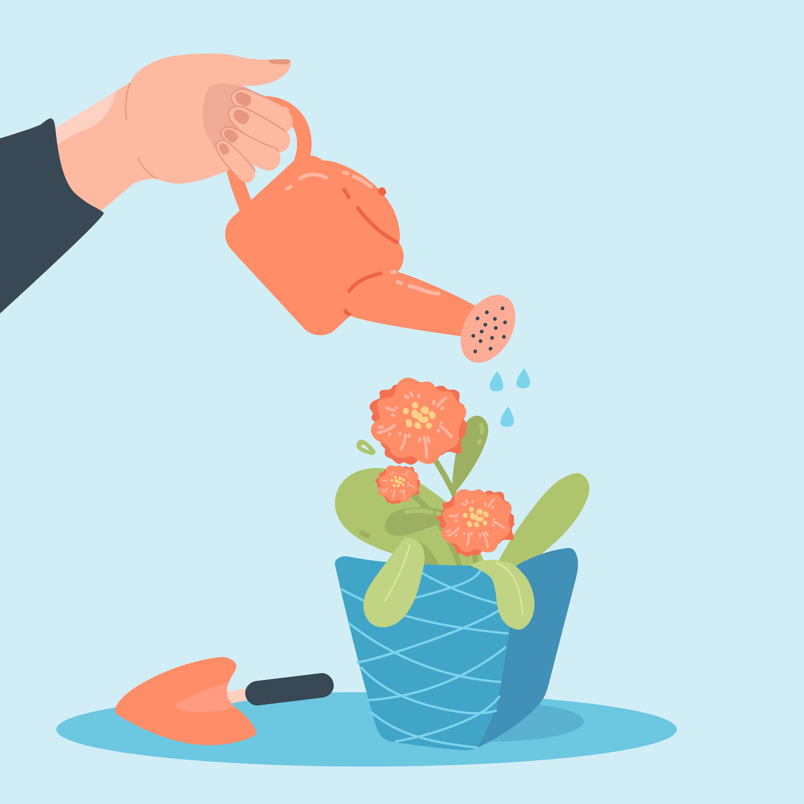

서비스 소개
식물도 처음이라면
물 주는 시기를 몰라도 초록달력이 알려드립니다.
이용 방법을 확인하고 필요한 식물의 물주기 알림을 신청해 보세요.

주요 기능
-
물주기 알림
식물마다 필요한 주기에 맞춰 알려줍니다.
-
식물 도감
우리 집 식물의 이름과 특징을 찾아봅니다.
-
성장 기록
사진으로 식물의 변화를 기록합니다.
이용 방법
- 키우는 식물을 등록합니다.
- 물주기 알림을 받습니다.
- 성장 기록을 남기고 확인합니다.
소식 받기
자주 확인하는 이메일을 입력하면 물주기 알림과 유용한 식물 팁을 보내드립니다.